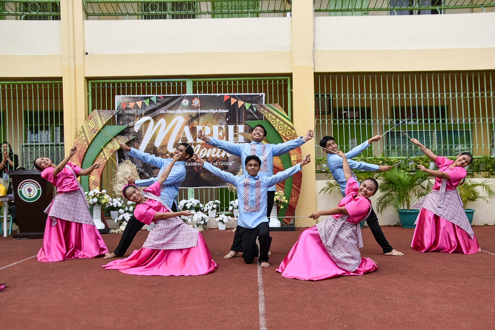

Folkdance
I learned that coordination is important especially when dancing folk dances, and that energy is needed to be able to keep up with the rhythm, and to influence others with the energy.
I can apply what I learned by making sure that the dancers are enjoying so that their energy and coordination will be maintained.
Yes, I participated actively in this event by cheering for the dancers from each grade level, especially for the grade 9s to keep the spirit up and energy lively.
I would teach others by showing them the difference of dancing with coordination and energy and dancing without coordination and energy.
Events like these are important for us to remember and strengthen our Filipino culture.